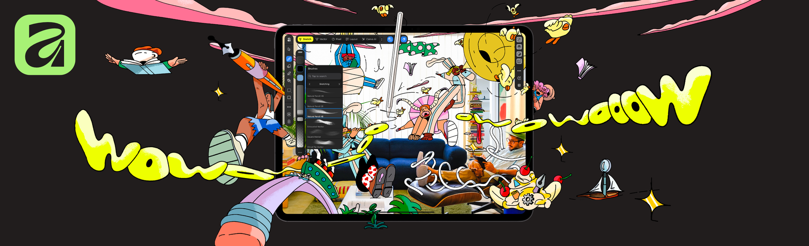
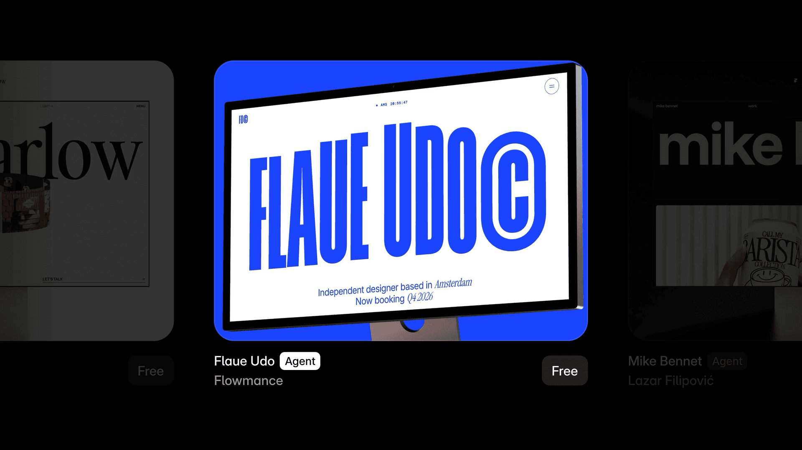
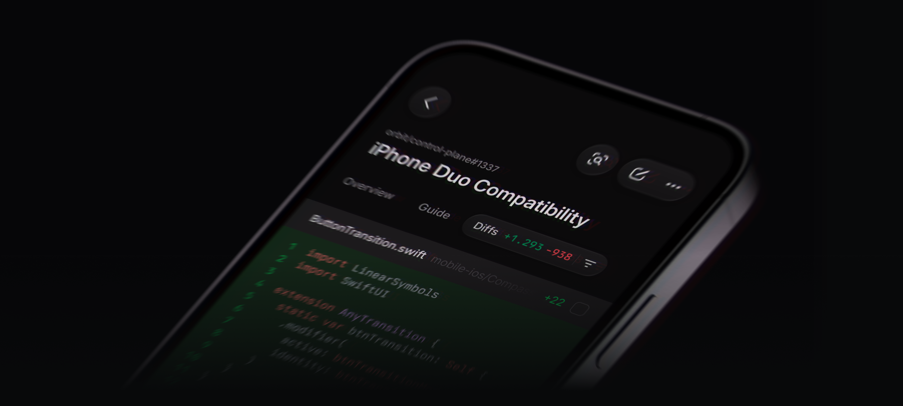
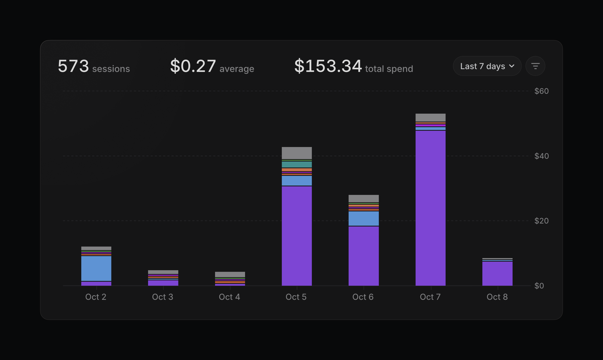
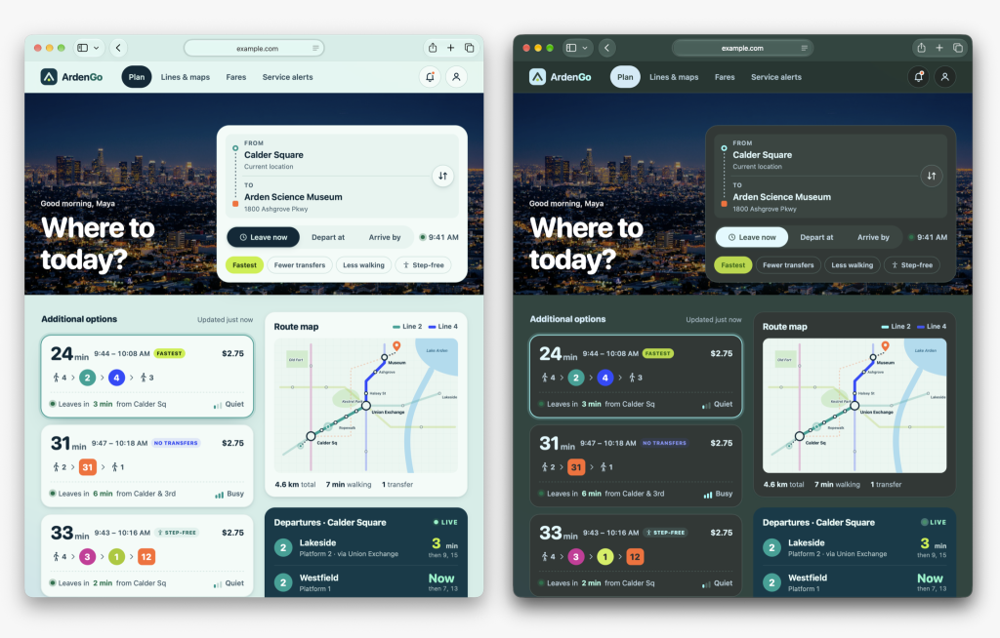
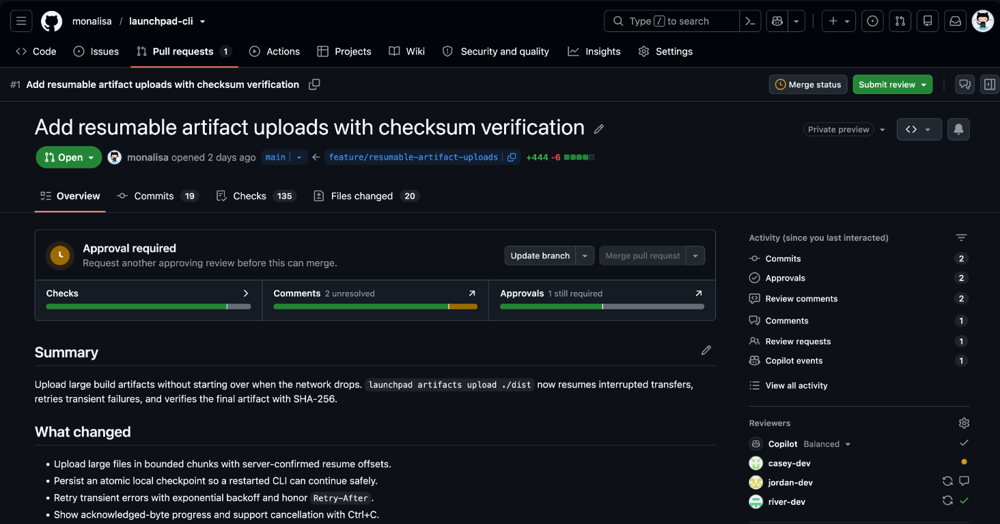
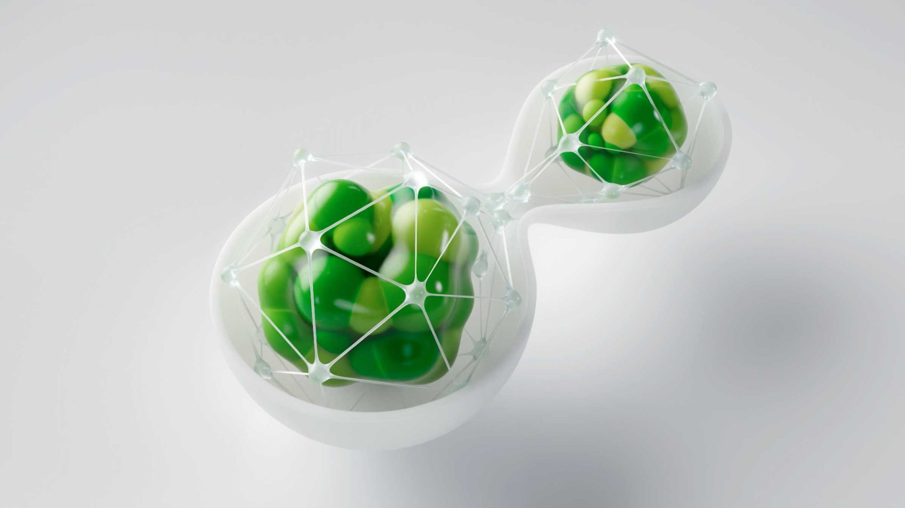

今天真正有用的更新，都在拆掉 AI 的“成片假象”：Figma 把生成插画还原成描边和图层，OpenAI 把局部标注与 SVG 交给 API，Linear 干脆把 credits 花到哪里摊成账单。能生成早就不稀奇了，能改、能续、能停，才算开始进生产。
另一条线更朴素。GitHub 把阻断项搬到顶部，WebKit 给不支持暗色的网站兜底，Affinity 则把 iPad 从伴侣软件做成正经工作台。今天没有“革命”，但全是能少返一次工的东西。
Figma agent 现在生成的插画和图标不再是一坨难拆的矢量：对象按功能分组、图层可以独立改，自己的插画也能作为 style reference。线条保留 stroke，不用拿 fill 假装描边，官方还把结构直接写成可进 Figma Motion。
这次终于碰到设计文件的基本盘了。会画一只图标不值多少钱，能把线宽、端点、层级和后续动画都留下，才可能接进设计系统。还没实测，跨一整套图标的一致性先不替它吹。
OpenAI 把 Images 2.6 分成 Flare 和 Sunburst：官方称整体生成快 50%，Flare 在 low quality 下最快约 6 秒，Sunburst 负责更高质量和多轮编辑的一致性。GIF 是最显眼的新玩具；更实用的是 API 终于有 image markup、SVG export 和 complexity 参数。
API 标准 token 价没有顺手涨一档：Flare / Sunburst 的 image input 是 $8/M、output $30/M、cached input $2/M，text input $5/M，和 2.5 同档模型一致。单张到底多少钱仍看质量和 token，别拿“同价”当无限重画。品牌细节能不能扛住十轮修改，还没实测，先不下结论。

Affinity 把 sketch、vector、pixel 和 layout 都塞进同一个 .af 文件，Apple Pencil 的 pressure、tilt、barrel roll、squeeze、hover 也都接上了。RAW、矢量、千层文件和多页排版不需要先导出再换 App，最后还能回到 proper color handling 的印刷文件。
核心工具对个人免费，Canva AI Studio 才要 premium；App 本身需要一个免费 Canva 账号。这定价挺狠，iPad 上那些各管一段、每段再收一次订阅的软件要难受了。真机大文件性能还没测，但它至少不是把桌面版切薄一半就端上来。

Framer Marketplace 新增 Agent Templates。每套模板不只卖页面皮肤，还带 skills、design system page 和一条说明视频；让 agent 补 careers page 或 blog index 时，它会沿用原模板的样式与组件。
这比“照这张图再做一页”靠谱得多。模板作者以后卖的是一小套生成规则，组件命名、内容边界和禁用项都会影响结果。好处是新页面没那么容易跑味；麻烦也很直接，skills 和组件一样要维护，交付后不能装死。

Linear 的 Diffs 已进 iOS 和 Android：手机上能跑 Guided Reviews、从 review inbox 接活、看 preview link、跟 review / cloud coding agent 对话，也能把批准的改动合并；看一半可以回桌面接着看。
它没把桌面 diff 生硬缩成一条细缝，而是把“先弄懂改了什么，再决定下一步”留在小屏。设计评审也该学这点：移动端先给变化、阻断和责任人，完整画布回桌面看，别逼人在手机上捏两下完成像素级验收。

Linear 管理员现在能按 team、feature、user 或 loop 拆 AI credit，用任意时间段看总花费、session 数和平均每次费用。限制可以下到 workspace、user、loop；撞线后直接暂停新增用量，等周期重置或管理员加额度。
这才是 agent 真正进入公司的标志：不是大家都在用，而是财务终于知道谁在烧、哪个流程最贵、何时该停。没有 loop 级限额的“AI 预算”，基本都只是月底看总账时的一声叹气。

Safari 27.3 beta 加了用户主动开启的 Adaptive Dark Mode。WebKit 说暗色模式用户占约 40% 的页面加载，但真正支持暗色的网站只有约 10%；新模式会分析亮度，处理文字、渐变、SVG，连简单黑白位图 logo 都可能重画。已经声明 color-scheme: light dark 的站点不动，canvas 也不碰。
这不是开发者可以偷懒的许可证。混合模式、mask 和品牌 logo 都可能被系统判断错，兜底永远比原生暗色粗。想保住控制权就认真声明 color-scheme，再拿透明 PNG、SVG、图表和嵌入内容逐个过一遍；整页 invert() 那套早该退休了。

GitHub 的新 PR Overview 开放 opt-in public preview。合并状态、checks、comments、approvals 和下一步动作被搬到页面顶部，merge box 用不到原来一半的空间；评论还能只看 unresolved 或自己写的，并按最新优先。
这是很标准、也很容易被忽略的信息架构修正：先告诉人为什么不能过，再给能做的动作，历史流水往后放。设计评审、内容审批、发布清单都适用。现在只是 preview，信息密度会不会过头还得看长 PR，至少方向没绕弯。

视频：Pitch / Visual R&Dhttps://vimeo.com/1096333916｜Finished spothttps://vimeo.com/1221226233｜来源：Stash 制作解析https://www.stashmedia.tv/infinte-invisible-bleed-get-clean-with-lola-mullenlowe/
Bleed 和 LOLA MullenLowe 要给 Cif Infinite 解释“看不见的益生菌技术”。他们没画一堆实验室蓝光，而是抓住包装上的沙漏轮廓，把它做成半透明的 3D 胶囊：外面是软膜和细网，里面是绿、黄颗粒，运动时有流体感，但整体几何非常干净。技术感有了，还是一眼能认回清洁产品，不会突然变成药企片。
镜头节奏也不靠狂切。先让胶囊在白色空间里慢慢开合、分裂和连接，再用微粒、薄膜形变和透光把“持续作用”讲出来；产品包装只需要在关键节点接住颜色和轮廓。最值钱的是这套 pitch 里的视觉概念最后真的进了 campaign，后来还能继续复用。R&D 不是开拍前做几张气氛图，是一路改到能当品牌资产。
做下一条产品 hero video，可以先只做一个五秒母镜头：把包装或 UI 里最有识别度的轮廓抽出来，规定它的材质、形变和进入退出方式，再看能不能长出三种镜头。长不出来就别急着上整片。这个方法比先写一百句“未来感、科技感、粒子感”管用。
过去 24 小时真正新增的就两条，今天不拿旧片凑第三条。
1096333916 与 finished spot 1221226233 已交叉核验。两个 Vimeo player 均返回 401，飞书使用 Stash 1920×1080 静态图降级并保留原片链接。More Holiday Warmth and Wit from Wallace Gromit 轻观察。最新 feed 只有这两条，不把 Doom Burger、Bass X Machina 或更早内容搬回来。核验说明：Figma、OpenAI、Canva、Framer、Linear、WebKit、GitHub 与 Stash 官方页面于 2026-11-06 回读。正文 7 张配图原始宽度为 1024–3904px，并逐张目视检查；Cif Infinite 的 Vimeo player 预检返回 HTTP 401，因此按规则使用 Stash 1920×1080 静态图作为 fallback=image，保留 Stash 与两条 Vimeo 链接。